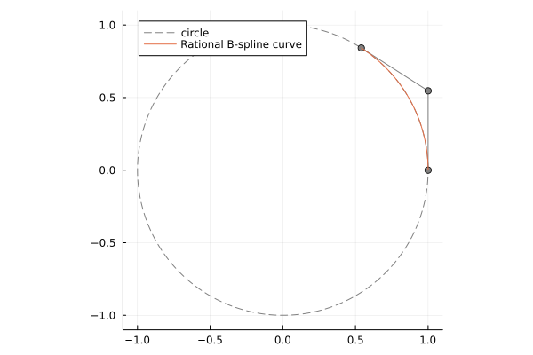
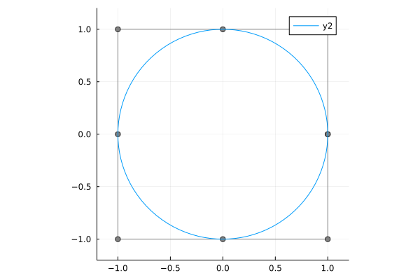

Rational B-spline manifold
Setup
using BasicBSpline
using StaticArrays
using LinearAlgebra
using PlotsNon-uniform rational basis spline (NURBS) is also supported in BasicBSpline.jl package.
Definition
Rational B-spline manifold is a parametric representation of a shape.
For given $d$-dimensional B-spline basis functions $B_{(i^1,p^1,k^1)} \otimes \cdots \otimes B_{(i^d,p^d,k^d)}$, given points $\bm{a}_{i^1 \dots i^d} \in V$ and real numbers $w_{i^1 \dots i^d} > 0$, rational B-spline manifold is defined by the following equality:
\[\bm{p}(t^1,\dots,t^d; \bm{a}_{i^1 \dots i^d}, w_{i^1 \dots i^d}) =\sum_{i^1,\dots,i^d} \frac{(B_{(i^1,p^1,k^1)} \otimes \cdots \otimes B_{(i^d,p^d,k^d)})(t^1,\dots,t^d) w_{i^1 \dots i^d}} {\sum\limits_{j^1,\dots,j^d}(B_{(j^1,p^1,k^1)} \otimes \cdots \otimes B_{(j^d,p^d,k^d)})(t^1,\dots,t^d) w_{j^1 \dots j^d}} \bm{a}_{i^1 \dots i^d}\]
Where $\bm{a}_{i^1,\dots,i^d}$ are called control points, and $w_{i^1 \dots i^d}$ are called weights.
Visualization with projection
A rational B-spline manifold in $\mathbb{R}^d$ can be understanded as a projected B-spline manifold in $\mathbb{R}^{d+1}$. The next visuallzation this projection.
# Define B-spline space
k = KnotVector([0.0, 1.5, 2.5, 5.0, 5.5, 8.0, 9.0, 9.5, 10.0])
P = BSplineSpace{3}(k)
# Define geometric parameters
a2 = [
SVector(-0.65, -0.20),
SVector(-0.20, +0.65),
SVector(-0.05, -0.10),
SVector(+0.75, +0.20),
SVector(+0.45, -0.65),
]
a3 = [SVector(p...,1) for p in a2]
w = [2.2, 1.3, 1.9, 2.1, 1.5]
# Define (rational) B-spline manifolds
R2 = RationalBSplineManifold(a2,w,(P,))
M3 = BSplineManifold(a3.*w,(P))
R3 = RationalBSplineManifold(a3,w,(P,))
# Plot
plotly()
pl2 = plot(R2, xlims=(-1,1), ylims=(-1,1); color=:blue, linewidth=3, aspectratio=1, label=false)
pl3 = plot(R3; color=:blue, linewidth=3, controlpoints=(markersize=2,), label="Rational B-spline curve")
plot!(pl3, M3; color=:red, linewidth=3, controlpoints=(markersize=2,), label="B-spline curve")
for p in a3.*w
plot!(pl3, [0,p[1]], [0,p[2]], [0,p[3]], color=:black, linestyle=:dash, label=false)
end
for t in range(domain(P), length=51)
p = M3(t)
plot!(pl3, [0,p[1]], [0,p[2]], [0,p[3]], color=:red, linestyle=:dash, label=false)
end
surface!(pl3, [-1,1], [-1,1], ones(2,2); color=:green, colorbar=false, alpha=0.5)
plot(pl2, pl3; layout=grid(1,2, widths=[0.35, 0.65]), size=(780,500))Conic sections
One of the great aspect of rational B-spline manifolds is exact shape representation of circles. This is achieved as conic sections.
Arc
gr()
p = 2
k = KnotVector([0,0,0,1,1,1])
P = BSplineSpace{p}(k)
t = 1 # angle in radians
a = [SVector(1,0), SVector(1,tan(t/2)), SVector(cos(t),sin(t))]
w = [1,cos(t/2),1]
M = RationalBSplineManifold(a,w,P)
plot([cosd(t) for t in 0:360], [sind(t) for t in 0:360]; xlims=(-1.1,1.1), ylims=(-1.1,1.1), aspectratio=1, label="circle", color=:gray, linestyle=:dash)
plot!(M; label="Rational B-spline curve")
Circle
gr()
p = 2
k = KnotVector([0,0,0,1,1,2,2,3,3,4,4,4])
P = BSplineSpace{p}(k)
a = [normalize(SVector(cosd(t), sind(t)), Inf) for t in 0:45:360]
w = [ifelse(isodd(i), √2, 1) for i in 1:9]
M = RationalBSplineManifold(a,w,P)
plot(M, xlims=(-1.2,1.2), ylims=(-1.2,1.2), aspectratio=1)
Torus
plotly()
R1 = 3
R2 = 1
A = push.(a, 0)
a1 = (R1+R2)*A
a5 = (R1-R2)*A
a2 = [p+R2*SVector(0,0,1) for p in a1]
a3 = [p+R2*SVector(0,0,1) for p in R1*A]
a4 = [p+R2*SVector(0,0,1) for p in a5]
a6 = [p-R2*SVector(0,0,1) for p in a5]
a7 = [p-R2*SVector(0,0,1) for p in R1*A]
a8 = [p-R2*SVector(0,0,1) for p in a1]
a = hcat(a1,a2,a3,a4,a5,a6,a7,a8,a1)
M = RationalBSplineManifold(a,w*w',P,P)
plot(M)